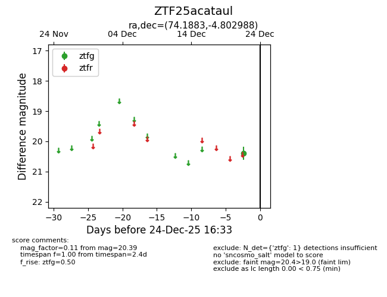
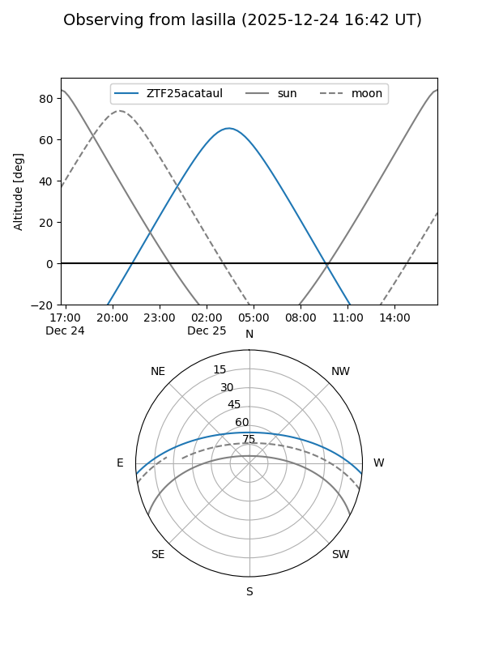
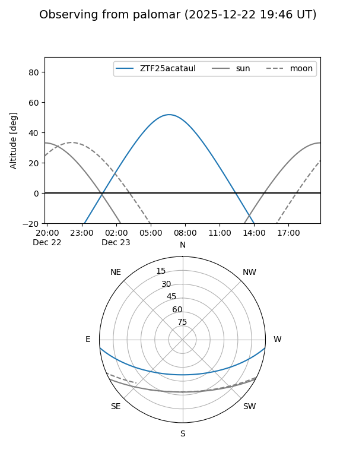

ZTF25acataul
Target ZTF25acataul at 2025-12-22 16:31
Aliases and brokers:
FINK: fink-portal.org/ZTF25acataul
Lasair: lasair-ztf.lsst.ac.uk/objects/ZTF25acataul
ALeRCE: alerce.online/object/ZTF25acataul
alt names
ZTF25acataul (ztf,fink_ztf)
Coordinates:
equatorial (ra, dec) = 74.1883,-4.80299
equatorial (HMS+DMS) = 04:56:45.18,-04:48:10.76
galactic (l, b) = (203.6119,-27.62490)
Flags:
Photometry:
last ztfg=20.39
1 ztfg detections
Lightcurve

Visibility


Additional plots